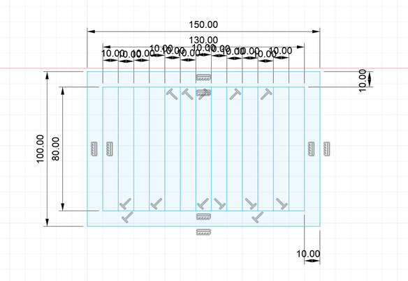

Hluti 1
Vínylskeri notaður til að gera límmiða
Ákveðið var að prenta út límmiða sem stóð á "BUDVA 2024" og líma hann á vegg í heimastofu vélaverkfræðinnar þar sem að útskriftarferð þeirra er til Budva í sumar. Tilgangur límmiðans er því að vekja tilhlökkun 3. árs nema í véla-og iðnaðarverkfræði.
Byrjað var á því að hanna límmiðann í inkscape. Stærð á vinnusvæðinu (e. canvas) var stillt á 100x50 mm þar sem það var hámarksstærð límmiða samkvæmt fyrirmælum kennara. Þá var skrifað "BUDVA 2024" inn í textabox. Textinn var stækkaður þangað til hann fyllti nokkuð vel í vinnusvæðið, leturgerðin var stillt á sans-serif og á bold. Þá var farið í fill and stroke stillingar og stillt á no fill, flat color og 0.02 mm breidd í stroke style. Það kom þá svona út í inkscape:
Þá var skurðarferillinn vistaður sem pdf skjal og opnaður í adobe acrobat. Þar var ýtt á print og hæð og breidd skurðarflatar stillt eins og rökrétt var. Þá var ýtt á print og beðið eftir að límmiði prentaðist. Hluta utan á og innan í stöfum voru fjarlægðir og sett var límband yfir stafina til þess að þeir myndu halda staðsetningu sinni með tilliti til hvers annars. Útkomuna eftir þessar aðgerðir má sjá hér.
Límmiðinn var þá settur upp á vegg og má sjá það hér að neðan.
Hluti 2-1
Kerf prófun
Markmið með kerf prófun er að komast að þykkt geislans í geislaskeranum. Byrjað var á því að teikna skurðarferlana í fusion og má sjá það hér fyrir neðan.
Síðan var þetta exportað sem svg skrá og sett í inkscape. Eftir ábendingar frá kennara var teikningin sköluð niður til þess að nýta afgangsefni. Kennari sá um að skala niður og var ekki skráð hversu mikið það var en það skiptir þó ekki máli fyrir þessa prófun. Þar var teikningunni stillt upp út við kant skurðarsvæðisins. Það þarf svo að færa inn nokkrar stillingar í inkscape. Í fill and stroke var valið að nota ekkert fill, flat colour og breiddinn á geislanum sett sem 0.02 mm til þess að skurðurinn fari í gegnum plötuna. Hér má sjá mynd af uppsetningunni í inkscape.
Þá var ákveðin staðsetning skurðar eins og sjá má á eftirfarandi mynd.
Hér má sjá myndband af geislaskeranum að skera kerf prófið.
Og mynd eftir skurðinn hér
Þá voru kubbarnir teknir út, settir þétt upp að hvor öðrum og heildarlengd mæld. Það má sjá á næstu mynd.
Lengdin var mæld L = 85.1 mm. Þá var gatið mælt sem kubbarnir voru teknir út og má það sjá hér.
Sú lengd var L' = 86.7 mm Það voru sem sagt skornar 14 línur og heildar lengdin sem skurðurinn olli var L'-L = 0.16 mm og þvermál geislans er því kerf = (L'-L)/n = (1.6 mm)/14 = 0.114 mm. Þessi niðurstaða verður þá notuð við hönnun í næsta hluta.
Hluti 2-2
Hönnun
Ákveðið var að hanna stand fyrir fartölvu til þess að bæta líkamsstöðu við notkun hennar. Takmarkað efni var í boði og auk þess aðeins hægt að skera í tvívídd. Þess vegna þurfti að koma með frumlega hönnun til þess að nýta efni sem best. Fyrsta tillaga að hönnun má sjá hér, bæði þversniðs- og þrívíddarskissur.
Eins og sést var þetta mjög gróf hugmynd og var vonast eftir því að hún myndi þróast á seinni stigum verkefnisins. Ákveðið var að miða stærð fartölvu við HP spectre x360 14" þar sem það er tölva hönnuðar. Botnflöturinn á henni er 22.04x31.37 cm. Ákveðið var að miða við 25x35 við hönnun.